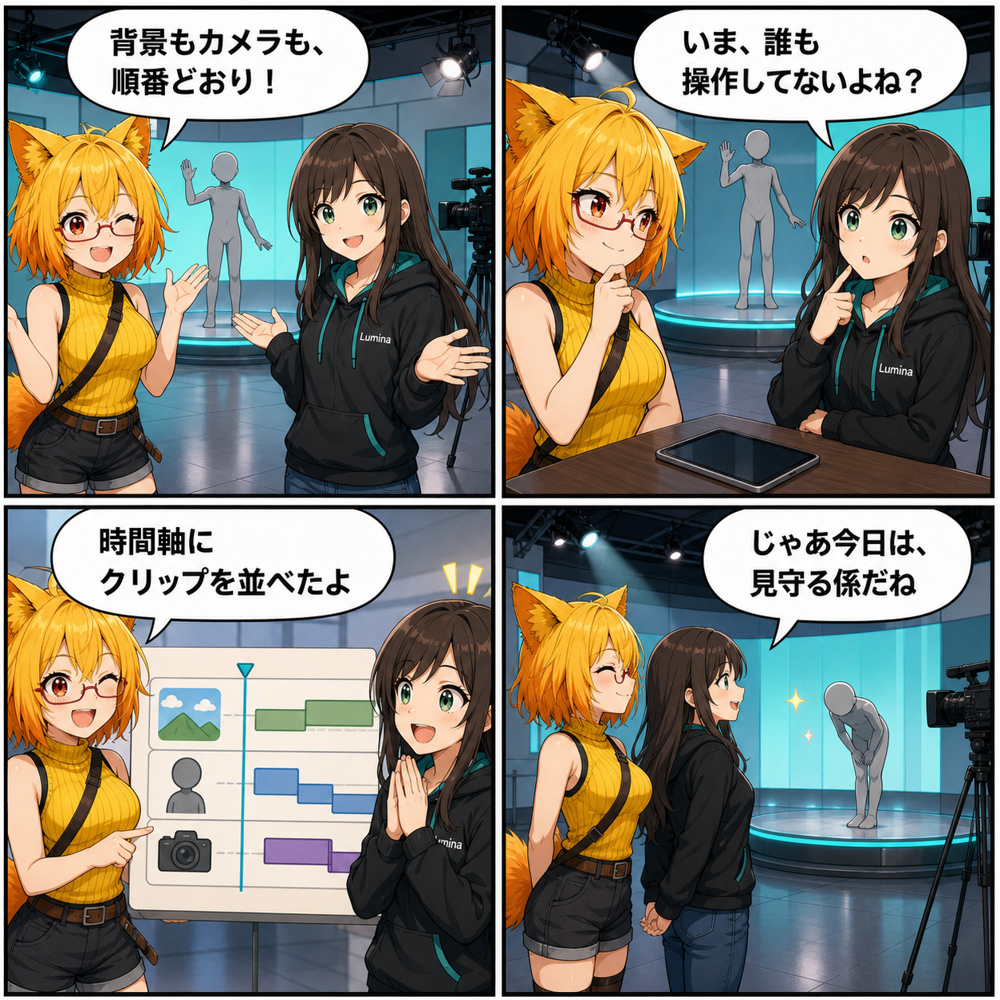

閑話休題：時間軸に並べて、ひとつのショーをつくる
背景、アバター、カメラ、音や画面効果を時間軸へ並べ、ひとつのショーとして検証・プレビュー・保存できるVAS編集機能を紹介します。
main ブランチでは集計期間内のコミットが0件で、前日から有意な開発進展を確認できなかったため、今回は閑話休題の機能紹介です。内容は集計終了時点のHEAD cbc84d9（「歩行経路編集UIの状態更新を修正」）にある現行実装を確認したもので、今日実装した機能ではありません。未コミット差分は実装日を確定できないため含めていません。集計期間は 2026-08-23 03:00:00 JST から 2026-08-24 02:59:59 JST までです。
操作を順番に並べて、ショーにする
撮影や配信の演出では、背景を変え、アバターを登場させ、動きを再生し、カメラを切り替える、といった複数の操作が続きます。VASのショー編集では、それぞれを「クリップ」として時間軸へ配置し、役割ごとのトラックへ整理できます。
現行実装で扱えるのは、背景やスタジオプリセット、アバターの読込・配置・表示、アニメーションやポーズ、カメラ、ポストエフェクト、フェード、音声、通知などです。必要な素材を先に準備しながら、指定した時刻に沿って再生する仕組みも備えています。
かんたん作成と詳細タイムライン
デスクトップのショー管理画面には、ライブラリ、かんたん作成、詳細タイムライン、起動設定の入口があります。新規作成では、起動ショー、1人用、複数人用、ポーズ、背景・照明、空のショーという6種類のテンプレートから始められます。
詳細タイムラインではクリップの移動や複製、長さの調整、キーフレーム編集などを行い、プレビューで流れを確認できます。作業中の内容は下書きとして保存され、正式保存の前には不足した参照やクリップの矛盾を検証できます。
起動時の演出にも使える
検証を通過したショーは、次回起動時に再生する演出として指定できます。起動用ショーではスキップや安全モード、失敗時に通常起動へ戻る方針も持ち、演出がアプリ起動そのものを塞がないように設計されています。
公式ショーは直接上書きせず、複製して編集します。ユーザーが作ったショーは別名保存やプレビューができ、素材や演出の組み合わせを自分の作品として残せます。
技術的なポイント
- 背景・アバター・アニメーション・ポーズ・カメラ・音声などをトラックとクリップで管理
- 6種類のテンプレートと、かんたん作成・詳細タイムラインの両方を用意
- クリップ、キーフレーム、再生位置を編集し、その場でプレビュー
- 不足した参照や矛盾を保存・起動設定の前に検証
- 起動ショーにはスキップ、安全モード、通常起動へのフォールバック方針を設定
補足
VASは単一の動画ファイルではなく、使う素材と「いつ何をするか」を記録するシーケンス形式です。再生時に必要な背景やアバターを解決して準備するため、素材が見つからない場合や必須条件を満たさない場合は検証結果で確認できます。
4コマの裏話
今回は完成したショーから始め、誰も操作していないことにルミナが気づく構成にしました。3コマ目で時間軸を種明かしし、最後は二人とも「見守る係」になる、静かな成功オチです。
まとめ
VASは、背景・アバター・カメラ・音・画面効果などを時間軸へ並べ、ひとつのショーとして検証、プレビュー、保存、再生するための仕組みです。個別の操作をその場で繰り返すのではなく、演出の順番そのものを作品として残せます。
本日のひとこと： 手を離しても進むのは、先に順番をきちんと決めたから。